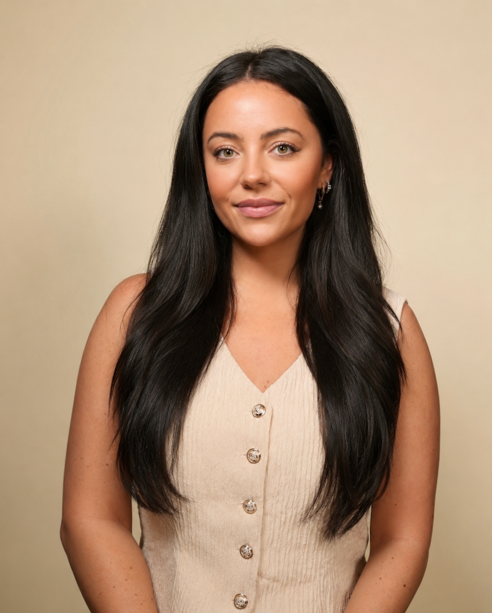
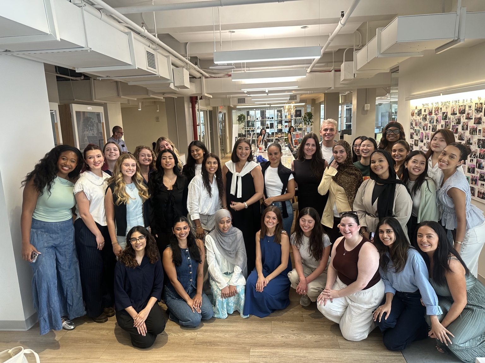
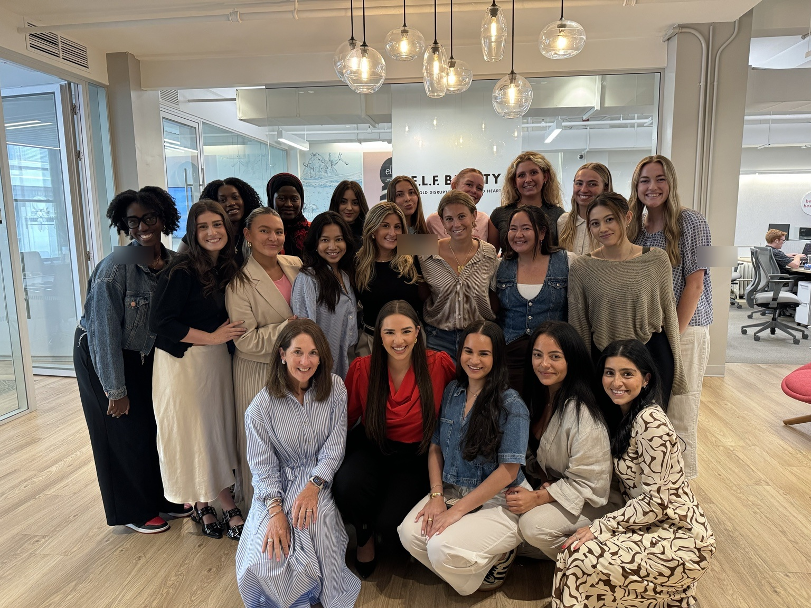
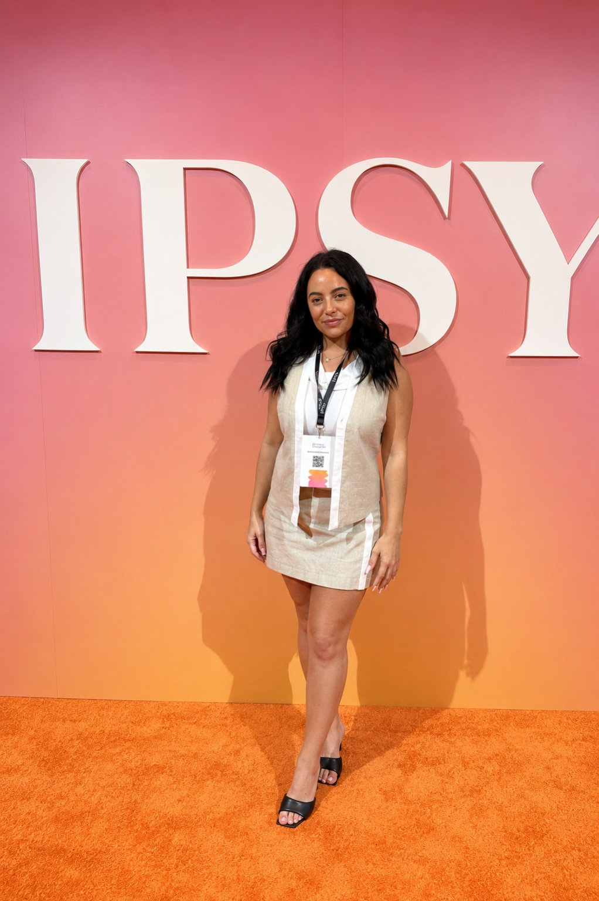
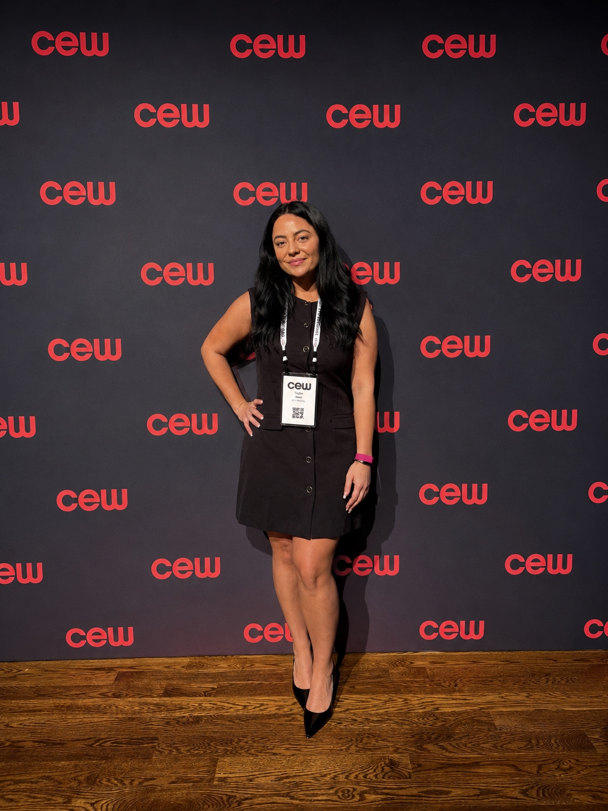
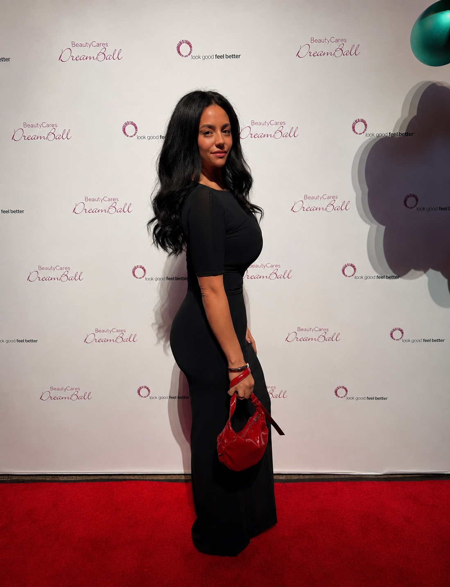
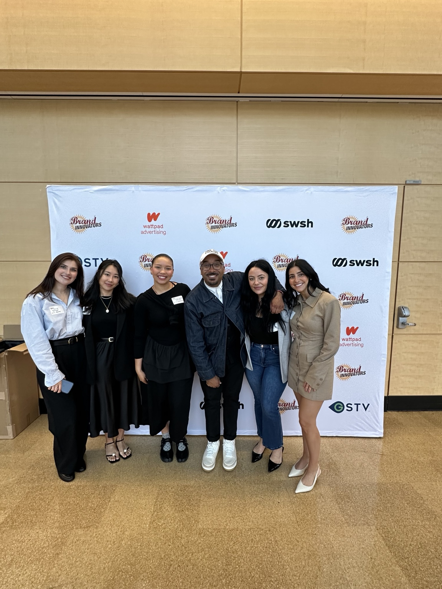

Marketing & Brand
Brand Marketing
IMC
Product Marketing
Digital Marketing
eCommerce
Talent Acquisition • Beauty • Consumer Brands
A people-first Talent Acquisition professional specializing in beauty, lifestyle, early-career talent, and high-growth consumer brands.

Transforming talent acquisition into measurable business growth through full-cycle recruiting, high-volume pipeline management, early-career programming, and employer brand visibility.
From executive searches and high-growth hiring to internship programs and employer branding, I’ve partnered with business leaders to build high-performing teams while creating exceptional candidate experiences.
My career started in fashion and retail recruiting and grew into beauty — where creativity, community, storytelling, and talent all come together.
I care about the moments that shape the candidate experience: the first outreach, the interview process, the offer conversation, onboarding, and the feeling someone has when they join a brand they’re excited about.
At e.l.f. Beauty, I supported recruiting across corporate, brand marketing, creative, product development, community, influencer, IMC, executive, contract, and early-career functions. Before that, I built a strong recruiting foundation at SPARC Group across fashion and retail brands.
Trusted by some of the most recognizable brands in beauty, fashion, and lifestyle. I’ve partnered with hiring leaders to recruit exceptional talent across creative, commercial, and corporate functions.
Beauty
Fashion & Lifestyle
Functions I’ve Recruited For
Whether recruiting an intern, a creative leader, or an executive, I believe the best hiring happens when talent, culture, and business strategy come together.
Signature Project
Owned end-to-end execution of e.l.f. Beauty’s early-career program, recruiting, onboarding, and supporting 50+ interns across multiple business functions while creating a best-in-class intern experience.


Behind the Program
A behind-the-scenes look at campus recruiting at the University of Michigan — meeting students, learning from Dr. Marcus Collins, and introducing future talent to opportunities at e.l.f. Beauty.
Beauty Recruiting
Supported full-cycle recruiting across e.l.f. Cosmetics, e.l.f. SKIN, rhode, Naturium, and Well People — partnering with business leaders to attract talent across marketing, creative, product, influencer, community, corporate, executive, contract, interim, and intern functions.
Community Beyond Recruiting
Industry events and networking moments help me stay connected to the conversations shaping beauty, brand, culture, and emerging talent.




“Recruiting is not just filling roles. It is building brands through people.”
Let’s Connect
I’m interested in Talent Acquisition opportunities across beauty, fashion, lifestyle, and consumer brands.
Email Taylornash@icloud.com
Phone 908-216-7748
Location New York, NY
LinkedIn https://www.linkedin.com/in/taylor-nash1/